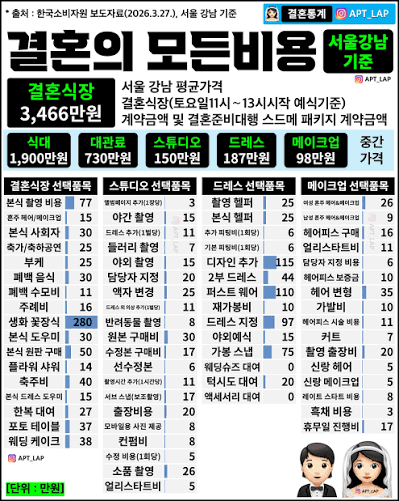

남자가 여자와 결혼하기 때문
만약 남자가 남자끼리 결혼하는 세상이었으면 대부분의 결혼식장은 모두 망하고 박리다매로 장사하는 집 몇곳만 남았음

남자가 여자와 결혼하기 때문
만약 남자가 남자끼리 결혼하는 세상이었으면 대부분의 결혼식장은 모두 망하고 박리다매로 장사하는 집 몇곳만 남았음
인생에 한번뿐인 내가 주인공인자리 <-- 이거를 이해못하는건 아니긴한데 이 심리때문에 너무 비쌈 코로나이후로 예식장도없어서 더 그렇고
결혼비용은 식대 빼고 나머지를 전부 합한 값이어야 되는거 아니야? 식대는 사람 온 숫자에 따라 크게 달라지니까, 그럼 결혼 비용은 약 1500만원 정도 들었다고 봐야지
올 3월에 함
대관료 600/ 400에 할인받아서 함
식대 8만원/ 6.2에 할인받아서 함. 보증인원 250명
드레스 120, 양복 대여 연계해서 재난지원금 박고 35짜리 어찌저찌 할인받아서 5에 함
웨딩슈즈 착한구두인가에서 5만원에 삼
2부 드레스 무신사에서 10만원짜리 삼
남녀 메이크업 청담에서 60
본식 헬퍼 25 부케 25
웨딩홀 영상이랑 사진같은건 걍 내가 PD라 내가 했고
본식 영상 60+사진 서브60 메인은 홀에서 서비스로 해줬고, 아이폰 스냅 후배가 해줌
메인 스냅 작가가 보정비랑 뭐 달라는거 내가 다 할줄 알아서 안줌 원본비 20만 추가로 냄
양가 부모님 메이크업 30
양가 어머니 한복 70
스튜디오 안하고 제주도 여행간김에 스냅해서
스냅 100 체류비 100
이래저래 아낀다고 아꼈는데 결국 축의금에서 흑자는 나더라
보증인원 250이 양가 합? 아니면 각각?
양가 합이지ㅋㅋㅋ
적게 올줄 알았는데 부모님들이 덕을 잘 쌓으신 덕분에 합쳐서 300-330명 정도 오신듯
고생했겠네
너가 딱 그냥저냥 못나지도 잘나지도 않은 딱 평범함인거같다
그런거같음
요즘 돌아다녀봐도 호텔 아닌 이상 웨딩홀은 꽃같은거 고정이라 생화 장식 이런거 추가로 안받던걸
아이고 지랄한다 진심 ㅋㅋ
전통 혼례 추천함. 가족 친지 어르신들이 너무 좋아하시고, 분위기도 엄청 좋았음.
식은 총 1시간 정도 걸렸는데, 꽃 가마 입장 (신랑/신부) + 사물놀이패 공연 + 삼현육각 공연
+ 전통 혼례 진행 + 삼신할매 마당놀이 + 행진 (하객들이 쌀이랑 팥 뿌림)
식 끝나고 폐백까지 바로 진행 했고, 피로연 식사는 한정식 코스요리로 인당 55,000원짜리 고름
총 비용은 신혼여행 경비 제외하고 1,800만 정도 들었음
예식장 (한옥체험관) 대관 - 10만원
전통혼례팀 (예식 풀 패키지 + 폐백 음식) - 335만원
피로연 식당 100인 기준 - 550만원
예물 (반지 x 2개) - 310만
영상촬영팀(2인) - 103만
본식스냅촬영(1인, 앨범2개 포함) - 100만
출장메이크업 (신랑신부, 양가 혼주, 누나매형) - 75만
한복대여 (신랑신부, 양가 혼주, 누나매형) - 195만
예단 (놋그릇, 이불) - 80만
한옥체험관 숙소 예약 (방6개) - 40만
청첩장 100장 (모바일 포함) - 15만
코로나때 결혼해서 식대도 박살나고 보증인원도 아예없이 한 나 자신 칭찬해~~
쓸데없는게 많긴하네
ㅇㅇ 계집년들 본능에 빌붙어서 털어먹는 업계임
결혼식 문화가 비효율이 끝판왕일세...
이해관계인이 신랑신부 양측 혼주까지 6인이고
거기서 한 사람만 욕심내면 끝도없이 커지는거임 ㅋㅋㅋㅋ
돈까스 클럽 상견례가 그럼 고증이 된다
그놈의 "평생에 한번뿐인"
다 허례허식
전에 결혼식한 사람보고 얼마나 들엇냐니까 여유잇게 하려면 큰거1장이라든데 난테 얼마나 꺼드럭거린건지 감도 안오네
ㅇㄱㄹㅇ 반박시 와이프 개념녀
비싸도 다들 하는 이유는
축의금이 존~~나게 들어오니까~~
다들 결혼식장 비용정도는 우습게 넘기더라
결혼식장은 장인어른 회사 강당 - 무료, 스드메 총합 250만. 음식은 출장뷔페 축의금으로 해결.
이렇게 결혼해도 아무 문제가 없었지.
작년에 결혼했는데 와이프는 자기가 실속있게 과하지않고 알뜰하게 했다고 생각하더라ㅎ... 그냥 그렇다고...
결혼식하고 돈 벌었다고 하는 사람들 보면 이상한게
식비 냈으니까 결혼식장은 이득 본거고
하객들이 준 돈은 내가 이미 갔었거나 가야하거나 하는 돈이니까 결국 손해 아님?
이 나라 여자들 허영심이 너무너무 심함
코로나때 해서 대관비 0 개이득
남x남이면 안나온다고?
ㄴㄴ 헛소리임
와이프랑 나랑은뭐 알아서 잘 싸게 했으니까 넘어가는데
와이프 친구는 여자가 싸게 하자니까 남자가 혼수 3천마통으로 긁고 스드메 최고급으로 안하면 왜 하냐면서 와이프말 절대 안듣고 끝까지하더라 대충 들어보니 수원에서 한 식인데도 다합치니 6천넘게 나왔더라
난 서울에서 했는데 2천으로하고 흑자냈음 ㅋㅋ
남자라고 허례허식이없다는 편견을 버려야됌
게이가 되고 싶다는 얘기를 신박하게 하는구나 요즘엔
갈라치기라고 하는데 진짜 갈라치기 아님 일부 다수의 여자들 이 결혼식에 진짜 목숨검 본인이 주인공이고 본인이 공주라고 생각해서 무조건 이 돈 써야된다고 생각함